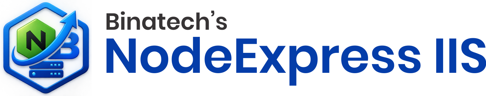

Publish, deploy and recover Node.js / React / Angular / Next.js projects on Windows Server — powered by PM2 and IIS.
NodeExpress IIS is a Windows desktop tool that moves web projects from a development PC to a Windows Server and keeps them running:
publish-info.json manifest.pm2 resurrect), enables pm2-windows-startup, enables ARR proxy, starts all IIS sites and restarts IIS.http://localhost:3000 on the machine where the tool runs.Publish, Deploy and Recover — one tool for the whole delivery pipeline.
Automatically finds a free port on the server; optionally set or change the IIS front-end port.
Server-side apps run under PM2 with strict online + port verification before the deploy is accepted.
IIS URL Rewrite rules and web.config are created automatically — no manual IIS configuration.
One click restores PM2 apps and IIS sites after a server reboot.
Every run writes a detailed log file in the logs folder next to the tool.
Detects Node, React, Angular, Next and Nuxt projects from package.json automatically.
Clean, card-based interface with splash screen, about and how-to-use dialogs.
npm install -g pm2)localhost:3000NodeExpressIIS.msi (or the setup file from your Binatech Solutions contact).C:\Program Files\NodeExpress IIS.Launch NodeExpress IIS from the Start Menu and sign in with your Binatech Solutions email and password. Use Remember me to skip the sign-in next time (the tool stores a small flag file next to the executable, so keep the install folder writable or run the tool as Administrator).
npm run build, and writes the publish folder with publish-info.json.pm2-windows-startup is installed if missing, ARR proxy is enabled, and all IIS sites are started.| Problem | Solution |
|---|---|
| “Cannot connect to the API at http://localhost:3000” | The licensing service is not running on this machine. Start it and sign in again. |
| “Invalid email or password” | Check your Binatech Solutions credentials. Contact us if your license has expired. |
| “License expires in X days” (orange warning) | Your license is expiring soon — click Login again to continue, and contact Binatech Solutions to renew. |
| “Expired. Please contact Binatech Solutions.” | The license has expired — contact us for a renewal. |
| Deploy fails with port errors | Another app is using the port. The tool normally picks a free port automatically — check the log in the logs folder. |
| Deploy/Recover does nothing | Run the tool as Administrator (right-click → Run as administrator). |
| IIS site returns 502 / does not proxy | Make sure the URL Rewrite and ARR modules are installed in IIS, then use Recover. |
| PM2 app not listed after reboot | Use Recover — it installs pm2-windows-startup so apps survive future reboots. |
| SmartScreen / antivirus prompt on first run | The file is unsigned. Click More info → Run anyway. See the README for code-signing information. |
Detailed per-run logs are written to logs\ next to the executable — attach them when contacting support.
Open Settings → Apps → Apps & features (or Control Panel → Programs and Features), select NodeExpress IIS, and choose Uninstall. An uninstall shortcut is also available in the Start Menu under Binatech Solutions → NodeExpress IIS.
Binatech Solutions builds deployment and DevOps tooling for Windows servers. NodeExpress IIS is our one-stop tool for publishing and operating Node.js, React, Angular and Next.js applications on IIS with PM2.